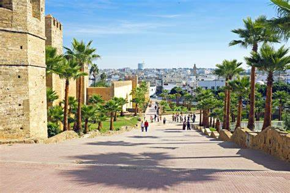
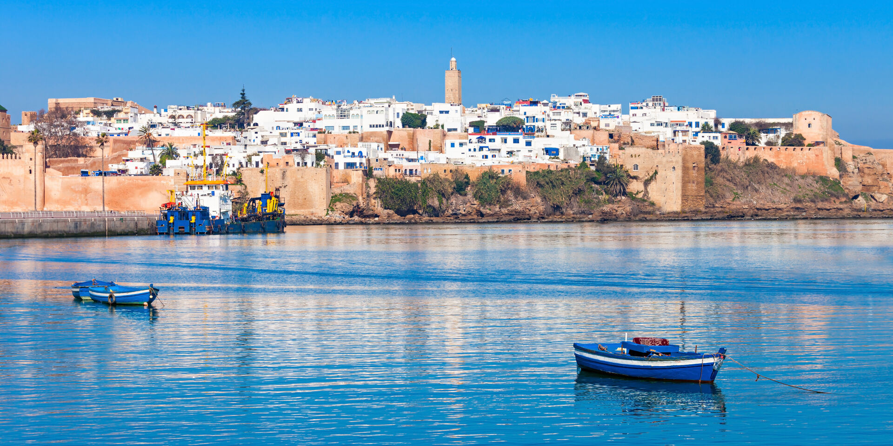
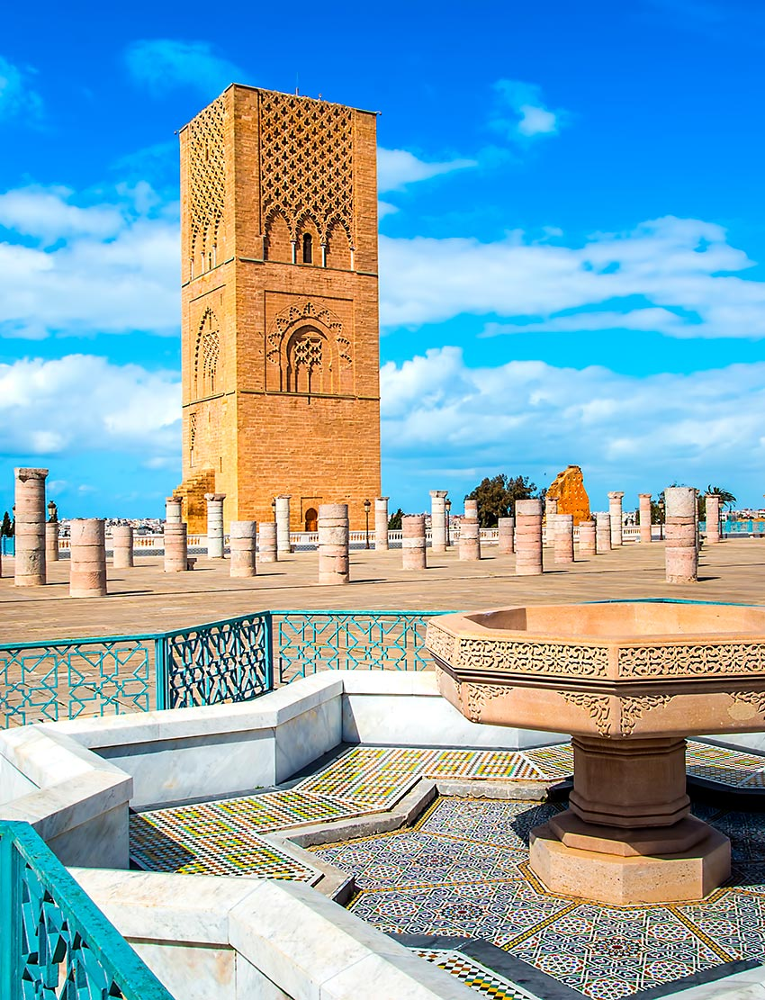
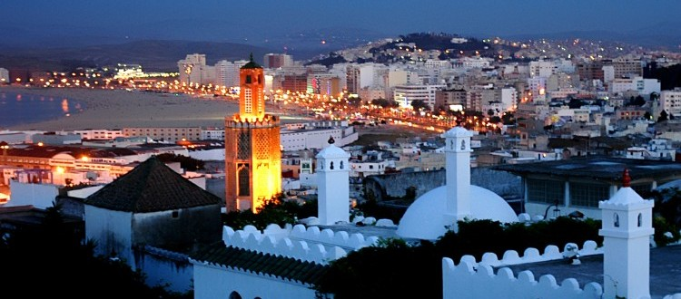

Informations sur rabat
Rabat, la capitale du Maroc, est une ville à l'atmosphère envoûtante, mêlant harmonieusement traditions séculaires, architecture mauresque et modernité émergente, offrant une expérience authentique du monde arabe.

Rabat, capitale du Maroc, conjugue harmonieusement traditions ancestrales et modernité émergente. Avec ses monuments historiques, ses marchés animés et ses plages de l'Atlantique, la ville offre une qualité de vie agréable. La scène culturelle dynamique et l'hospitalité marocaine contribuent à son charme envoûtant.

Cette ancienne citadelle est perchée au-dessus de l'océan Atlantique et offre une vue imprenable sur la ville. Elle est caractérisée par ses ruelles étroites, ses maisons blanchies à la chaux et ses jardins luxuriants. Un autre point d'intérêt majeur à Rabat est la Tour Hassan, un minaret inachevé datant du 12ème siècle. Autrefois prévu pour être la plus grande mosquée du monde, la construction de la mosquée a été abandonnée après la mort du sultan Almohade Yacoub al-Mansour. Aujourd'hui, la Tour Hassan reste un symbole emblématique de l'architecture almohade.
 